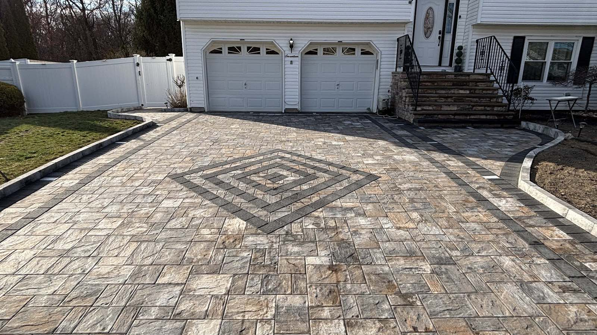
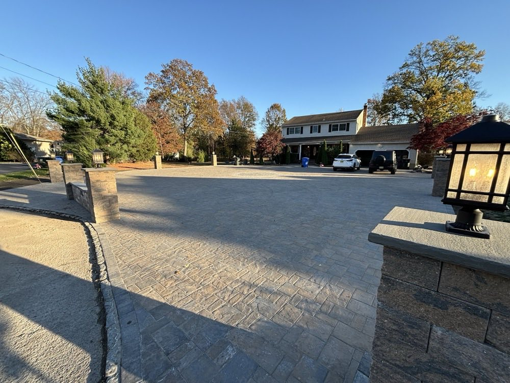
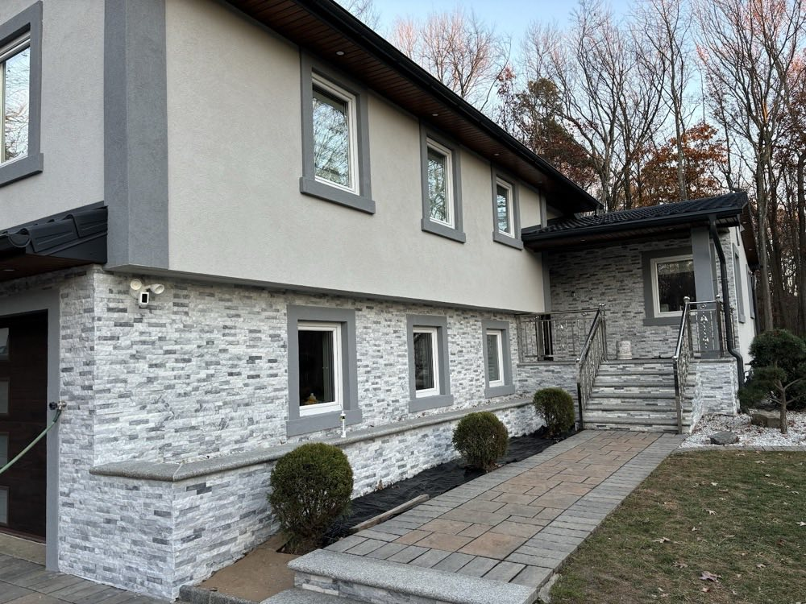
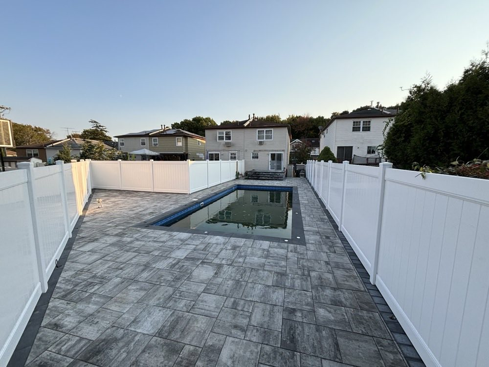
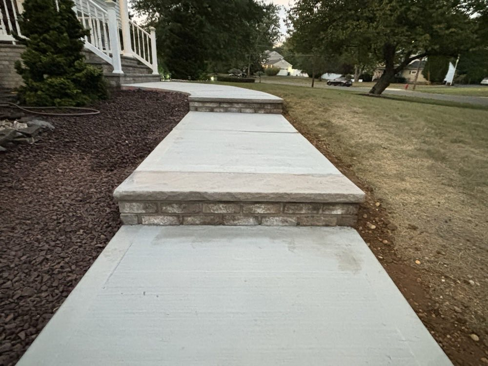
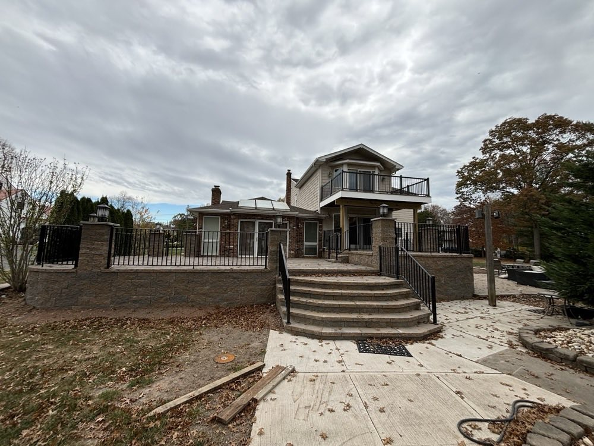
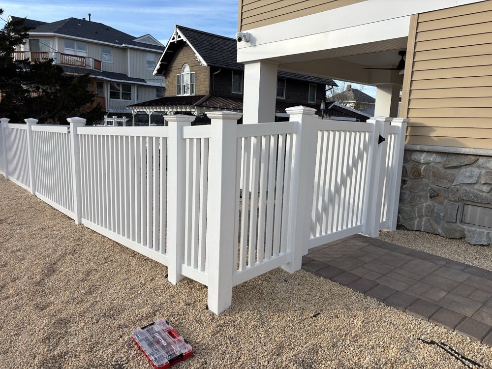

Paver Driveways
Interlocking paver driveways with proper base depth and edge restraint — custom borders and inlays if you want a statement entrance.

Freehold & Monmouth County, NJ
Custom paver driveways, patios, walkways, fire pits and stonework — installed with the kind of detail you can see from the curb, and a crew that stands behind every job.
Recent Work
Every project below is real GJD work across Freehold and Monmouth County — driveways, patios, walkways, fire features and stonework. Pavers are a job you buy with your eyes, so take a good look.






Photos are of completed GJD Masonry and Paver projects. Want to see more like yours? Ask for examples when you call.
What We Build
From a single walkway to a full backyard, GJD handles the base prep, the pavers and the stonework — so it looks right and stays put through Jersey winters.
Interlocking paver driveways with proper base depth and edge restraint — custom borders and inlays if you want a statement entrance.
Paver patios and walkways laid for clean lines and good drainage, sized to how you actually use the space.
Built-in fire pits and fire features in stone or paver block — a centerpiece that turns the patio into a place you'll use all season.
Segmental retaining walls that hold grade and tame a slope — engineered courses, proper backfill and drainage behind them.
Stone veneer facades, steps, piers and accents — real masonry that ties the hardscape back to the house.
Bringing it together — patio, walls, fire feature and pool decking planned as one outdoor space, not a pile of separate add-ons.
Why Homeowners Pick GJD
A paver job is only as good as the base under it and the people who built it. That's where GJD earns the work.
The owner and his crew don't disappear after the trucks leave — they put their name on the install and answer for it.
Proper excavation, compacted base and edge restraint — the unglamorous part that keeps pavers from heaving and settling.
We walk the project with you, talk through materials and layout, and put it in writing before anyone starts digging.
Based in Freehold and working the towns around it — a short drive, not a national franchise routing a crew through.
How It Works
Call or send the form with your project and ZIP. We'll set up a time to come look.
We measure, talk materials and layout, and give you a clear written price.
Base prep, install and detail work — done by the crew, not subbed out and forgotten.
We walk the finished job with you and stay reachable after — because our name's on it.
From Our Google Reviews
Real reviews from GJD's Google Business Profile — 4.5★ across 15 reviews.
"Between reliability and the quality of work I would not hesitate to recommend Daniel and his team to everyone I meet. The fire pit, the patio, the walkway — made my house look spectacular."
"Hired GJD Masonry and Pavers to do our driveway and patio. Daniel and his team have done an excellent job with paver installation and they stand behind their work."
Where We Work
Based on Union Avenue in Freehold and building paver & masonry projects across the nearby towns. Not sure if you're in range? Just ask.
About GJD
GJD Masonry and Paver is a hardscape and masonry contractor based in Freehold, New Jersey. We build paver driveways, patios, walkways, fire features, retaining walls and stonework for homeowners across Monmouth County.
The pitch is simple: do the base prep properly, lay the pavers clean, and stand behind the result. The owner runs the crew on-site, so the person quoting your job is the person responsible for it — that's the part our customers keep coming back to in their reviews.
Good to Know
Yes. We come out, walk the project with you, talk through materials and layout, and give you a clear written estimate before any work starts.
Paver driveways, patios and walkways; fire pits and fire features; retaining walls; stone veneer and masonry; and full outdoor-living spaces that combine several of those. Whether it's one walkway or a whole backyard, we can talk it through.
Pavers give you far more design options — borders, inlays, color blends — and individual units can be lifted and reset if you ever need a repair, rather than cracking like a slab. Laid on a properly compacted base, they hold up well to New Jersey freeze-thaw.
We're based in Freehold and work the surrounding Monmouth County towns — Marlboro, Manalapan, Howell, Colts Neck, Old Bridge, Englishtown, Millstone and nearby. If you're close by, give us a call and we'll let you know.
We do. The owner runs the crew on-site and puts his name on every install — our customers specifically mention in their Google reviews that we stand behind our work. We walk the finished job with you and stay reachable after.
Start Your Project
Tell us what you're thinking — a new driveway, a patio, a fire pit, a wall — and we'll set up a time to come take a look. No pressure, just an honest price.